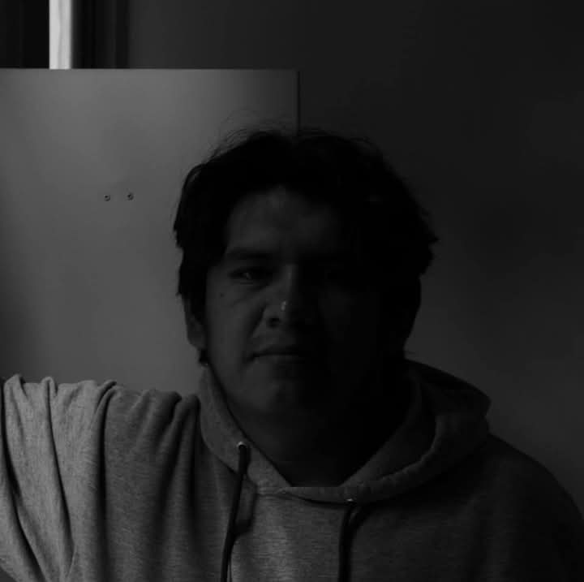

David Hernández Badillo
Conocido en el mundo del diseño bajo el seudónimo de INDIGO MERAKI.
Como persona, me considero curioso, amigable, extrovertido, determinado (o aferrado, dependiendo del contexto), bastante sarcástico y con un buen sentido del humor. Siempre estoy en busca de nuevas ideas y experiencias, y me gusta conectar con personas que comparten intereses similares.
En mi tiempo libre, disfruto de actividades como leer, escuchar música, ver películas y series, además de jugar videojuegos. En cuanto a mis gustos musicales soy una persona abierta a bastantes generos, me encanta escuchar música de variada, pero tengo una inclinación particular por el rap y algo de rock. En cuanto a libros, me apasiona leer sobre terror, suspenso, misterio y fantasia. Para las películas, disfruto especialmente del terror y la comedia, ya que ambos géneros me permiten disfrutar de una buena dosis de emoción y diversión.
Mis intereses profesionales están muy ligados al diseño gráfico, ya que me encanta explorar la creatividad visual. Actualmente, estoy enfocado en terminar una saga de libros que descubrí sobre un hospital psiquiátrico, y me gustaría fusionar esas ideas con mis conocimientos de diseño gráfico. También tengo como objetivo exponer mis trabajos en las exposiciones que se presenten, para dar a conocer mi visión artística. En lo personal, me gustaría practicar más la ilustración y explorar métodos de dibujo para mejorar mis habilidades en ese campo.
En cuanto a mis hobbies, disfruto mucho de cocinar y también de visitar museos. Esas actividades me permiten desconectar y disfrutar de momentos de reflexión y creatividad. Además, una de mis maneras favoritas de pasar un buen rato es estar con mis amistades, ya sea disfrutando de una tarde juntos o simplemente compartiendo buenos momentos.